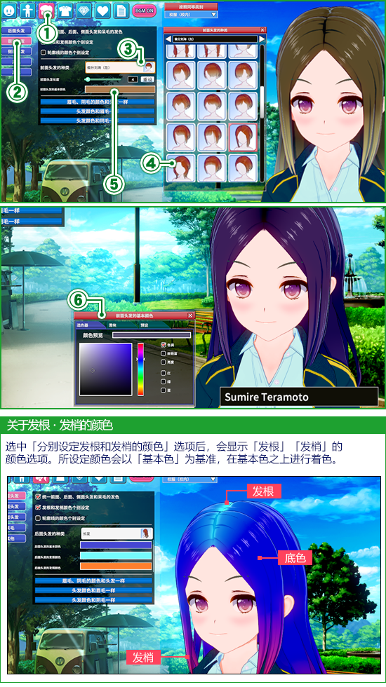
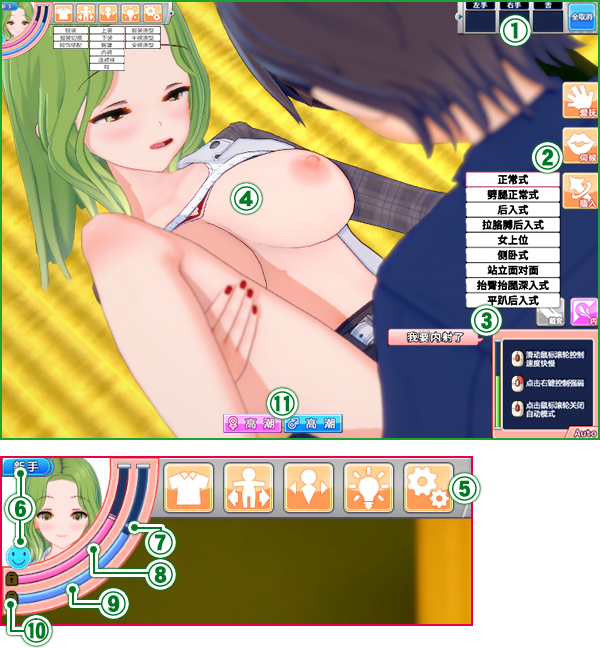
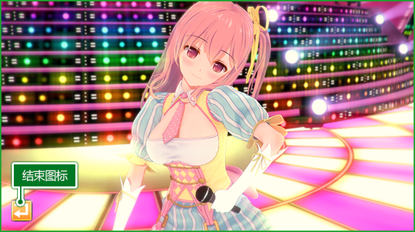

前言
感谢您购买Windows 7 / 8.1 / 10专用游戏「Koikatsu Party」。開始遊戲前，建議您先詳讀「游戏说明」以利遊戲順利進行。
・基本操作 : 本游戏使用以下Windows基本操作。
(1)左键 : 请点击鼠标左键。
(2)左键拖动 : 请按住鼠标左键移动鼠标。
本说明中会出现「请选择~」的句式。该字样出现时，请将光标移动到「~」的部分，点击鼠标左键。
（例：「请选择决定图标」出现时，将光标移动到「决定图标」上点击鼠标左键。）
※根据情况，有时会需要进行文件复制・移动・删除等操作。
如果有不明白的地方，烦请咨询您使用的电脑的厂家。
・基本操作 : 本游戏使用以下Windows基本操作。
(1)左键 : 请点击鼠标左键。
(2)左键拖动 : 请按住鼠标左键移动鼠标。
本说明中会出现「请选择~」的句式。该字样出现时，请将光标移动到「~」的部分，点击鼠标左键。
（例：「请选择决定图标」出现时，将光标移动到「决定图标」上点击鼠标左键。）
※根据情况，有时会需要进行文件复制・移动・删除等操作。
如果有不明白的地方，烦请咨询您使用的电脑的厂家。
使用条款
在玩「Koikatsu Party」前请仔细阅读。
建议您事先备份硬盘中的数据及程序，在运行游戏时进行正常判断。
●该游戏全部内容为虚构。
作品中出现的人物・团体名・地名・商品名・事件以及时代背景・职业均为虚构，如有雷同纯属巧合。
鉴于游戏内容以及情节，未满18岁人士请勿购买或进行游戏。
本游戏中所有出场人物均为18岁以上。
严禁在网络上共享以及上传文件、租赁业务、二手买卖以及类似行为。
●严禁上传视频以及游戏截图等二次使用行为。
●本作品中含有暴力、残酷的情节以及涉及犯罪的行为等过激内容。请勿模仿。
作品中的行为是经过许可的演技，并且纯属虚构。如果在现实中效仿本作品内容，有可能会受到法律惩罚。
●长时间进行游戏时，建议每1~2小时进行10~15分钟的休息。
●注意不要划伤或弄脏光碟任何一面。
如果光碟上沾上污物，请用柔软的布轻轻擦拭。请不要在阳光直射的地方、暖气附近、高温高湿的场所保存光碟。
●请勿使用有裂痕或者变形、用黏着剂修补过的光碟，以免损坏光驱。
如果曾经在看电视时、或是遭受强烈刺激时有过暂时性肌肉痉挛或失去意识的经历，开始游戏前请咨询医师。
游戏过程中如果出现上述症状，请立即停止游戏并及时就医。
●该硬盘为电脑专用。用音响等机器播放时，可能会有损伤听力、损坏音箱等的风险。
※各商品名通常为省略掉C和TM的各公司的注册商标。
！免责事项！
●对于使用本产品所发生的问题及损失、损害，本公司不负有任何责任。建议您事先备份硬盘中的数据及程序，在运行游戏时进行正常判断。
●该游戏全部内容为虚构。
作品中出现的人物・团体名・地名・商品名・事件以及时代背景・职业均为虚构，如有雷同纯属巧合。
鉴于游戏内容以及情节，未满18岁人士请勿购买或进行游戏。
本游戏中所有出场人物均为18岁以上。
！禁止事项！
●擅自复制或改造部分或全部该程序、数据以及游戏说明的行为，是被法律禁止的。严禁在网络上共享以及上传文件、租赁业务、二手买卖以及类似行为。
●严禁上传视频以及游戏截图等二次使用行为。
●本作品中含有暴力、残酷的情节以及涉及犯罪的行为等过激内容。请勿模仿。
作品中的行为是经过许可的演技，并且纯属虚构。如果在现实中效仿本作品内容，有可能会受到法律惩罚。
！注意！
●请与显示器保持适当距离。●长时间进行游戏时，建议每1~2小时进行10~15分钟的休息。
●注意不要划伤或弄脏光碟任何一面。
如果光碟上沾上污物，请用柔软的布轻轻擦拭。请不要在阳光直射的地方、暖气附近、高温高湿的场所保存光碟。
●请勿使用有裂痕或者变形、用黏着剂修补过的光碟，以免损坏光驱。
！警告！
●请勿在疲劳时进行游戏或者长时间连续进行游戏，以免对健康造成不良影响。如果曾经在看电视时、或是遭受强烈刺激时有过暂时性肌肉痉挛或失去意识的经历，开始游戏前请咨询医师。
游戏过程中如果出现上述症状，请立即停止游戏并及时就医。
●该硬盘为电脑专用。用音响等机器播放时，可能会有损伤听力、损坏音箱等的风险。
※各商品名通常为省略掉C和TM的各公司的注册商标。
「Koikatsu Party」是什么？


剧情

系统环境
-
- 所需系统环境
- 推荐系统环境
- OS
- Windows 7 / 8.1 / 10 64bit*1
- DirectX
- DirectX 11
- CPU
- Intel Core i3 4000 *2
- Intel Core i5 4000 *2
- RAM
- 4GB
- 8GB
- HDD
- 20GB
- GPU
- VRAM 1GB*3 *4
- VRAM 2GB *3
- 连接设备
- 鼠标・键盘、解析度高于1280 x 720的显示器
-
*1 不支持32bit版。不支持碰触操作。
*2 推荐intel品牌的CPU。
*3 不支持「NVIDIA品牌 GeForce 500系列」「ATI品牌RADEON HD6000系列」「Intel品牌Intel HD Graphics 4000」之前的显卡。
有「内置」或者「主内存共享」字样的图形系统并不包含在推荐系统环境中。
*4 使用1GB的VRAM时，请将简易设定改为「一般」或「速度优先」。
※有可能无法为二手电脑・自制电脑提供咨询服务。
※使用笔记本电脑时，可能会比同配置的台式电脑运行缓慢。
代工工厂制造的电脑发生驱动版本升级或更换部件的情况时，无法保证系统环境正常。
综上所述，本公司会尽最大可能为用户提供帮助，但如果由于电脑部件或驱动等引起问题时，本公司无法保证游戏正常运行。敬请谅解。
・请咨询您使用的电脑制造商，以确认您的电脑是否满足必要系统环境。
・根据环境不同，所需空间容量也会发生变化，请知悉。
・即便已达到要求的系统环境，如果驱动过旧，也有无法正常运行的情况。
・各制造商的驱动可以在网上获取。
如果因为不具备网络环境无法获取驱动，游戏可能会有无法正常运行的情况。
初期设定
启动桌面上的「Koikatsu Party」图标后，会显示游戏的「初期设定」画面。
-
(1) 开始游戏
可开始游戏。※显示。标题画面。
(2) 阅读游戏说明 显示游戏说明。
(3) 语言 请选择您的语言。
(4) 画面分辨率 设定画面的分辨率。
(5) 全屏模式 选中后游戏激活「全屏模式」，取消后变为「窗口模式」。 如在「全屏模式」下显示异常，请选择「窗口模式」。
(6) 简易设定・速度优先可降低对主机的负担。
・一般兼顾运行速度・显示品质的设定。
・高品质适合高配置主机。
(7) 显示器 在同时使用多台显示器的状态下，可指定显示器。此时为「全屏模式」。※如只有一台显示器，可忽略此选项。
(8) 系统信息 显示所使用主机的信息。
(9) 打开游戏文件夹 打开游戏的安装文件夹。
(10) 结束游戏 退出遊戲。
(11) 打开角色文件夹 打开保存角色数据的文件夹。
用户文件夹说明
「Koikatsu Party」的安装文件夹内有[UserData]文件夹。各种保存的数据会存放在该文件夹中。
・[Save] : 储存各种设定数据。
・[Cap] : 保存截屏功能截取的图像。
・[Coordinate] : 储存角色制作中保存的服装套装。
・[Chara] : 储存已保存的角色数据。※文件夹内「female」文件夹中储存女性；「male」文件夹中储存男性角色的存档。
・[CardFrame] : 储存拍摄模式中使用的前边框、背面边框的图像都请保存在这里。 ※请将前边框储存至文件夹内「Front」文件夹中；请将背面边框图像储存至文件夹内「Back」文件夹中。
・[bg] : 请将角色制作中用做背景的图像保存在这里。
・[Save] : 储存各种设定数据。
・[Cap] : 保存截屏功能截取的图像。
・[Coordinate] : 储存角色制作中保存的服装套装。
・[Chara] : 储存已保存的角色数据。※文件夹内「female」文件夹中储存女性；「male」文件夹中储存男性角色的存档。
・[CardFrame] : 储存拍摄模式中使用的前边框、背面边框的图像都请保存在这里。 ※请将前边框储存至文件夹内「Front」文件夹中；请将背面边框图像储存至文件夹内「Back」文件夹中。
・[bg] : 请将角色制作中用做背景的图像保存在这里。
标题画面
-
(1) 开始
移动至「学园制作画面」。
(2) 读取 继续游戏。
※移动至「读取画面」。
(3) 角色制作 具体设定人物的外表・服装等，以及通过网络上传页面进行上传或下载角色。
・女性角色开始制作女性角色。
・男性角色开始制作男性角色。
・上传页面通过游戏中的「上传页面」进行投稿。
・下载通过游戏中的「上传页面」进行角色下载。
※需连接网络才可使用上传页面功能。
※使用前请仔细阅读上传页面使用规则。
・下载(SteamSV)可以从更新前的Koikatsu Party中下载已上传的角色。
※更新前后的上传路径不同。
・返回返回之前的画面。
(4) 特殊模式 根据游戏进度开启特殊功能。
・自由H可对角色、地图以及时间段进行自由组合，体验相应的H剧情。
・演唱会可观赏所选角色的演唱会。
・事件可重温剧情角色事件以及改变外观。
・返回返回之前的画面。
(5) 配置 显示配置。可以改变游戏中的设定。
(6) 结束游戏 结束游戏。
角色制作
可对人物的外表・服装等进行设定。
-
-
(1) 主菜单 制作部位和系统选项。选择后在「(2)制作项目」中显示详细内容。
※从左依次为「脸」「身体」「头发」「服装」「配饰」「角色信息」、「保存・读取」「切换BGM」。
※选择「切换BGM」可对BGM进行ON／OFF之间的切换。
※「保存・读取」中的「表现方法」选项，会对游戏的所有设定生效，而非单一角色。
(2) 制作项目 详细显示在「①主菜单」中所选项目。
各部位的制作调整，通过「图标选择」和「滑条操作」等来实现。
※详情请见脸型和体型的调整、种类和颜色的选择、配饰 页面。
(3) 确认菜单 可变更角色状态并进行各种确认。
(4) 搭配类型 切换服装搭配。
系统会记录服装及配饰的每种搭配。
(5) 角色预览 显示制作中的角色。
通过「镜头操作」，可对角色进行360度自由旋转。
(6) 名牌 显示当前制作中的角色姓名。
※角色姓名可在「角色信息」中进行变更。
(7) 返回 返回之前的画面。
脸型和体型的调整（滑条操作 : 通过滑条来完成对脸型和体型的修改。以下为体型变更的示例。
-
(1) 从「主菜单」中选择「身体」。
(2) 从「制作项目」中选择需调整部位。
(3) 显示可以调整的部位和滑条。
※通过操作滑条，或者填写右侧的「输入数值」进行调整。
※以脸型、体型为例，其他滑条的操作方法相同。
种类和颜色的选择 : 大多选项可修改「种类」和「颜色」。以下为前面头发种类和颜色的变更示例。
- 
-
(1)
从「主菜单」中选择「头发」。
(2) 从「制作项目」中选择「前面头发」。
(3) 显示前面头发的制作项目后，从中选择「前面头发的种类」。
(4) 显示前面头发专用「选择窗口」后，从中选择想修改的发型。
(5) 选择制作项目中的「前面头发底色」。
(6) 显示颜色变更窗口后，从「选择器」「滑条」「预置」中选择颜色。
※根据所选的服装和配饰不同，个别可选择「副色」。
※通过「左键点击」或者「左键拖动」来实现颜色的选择。
※选中「滑条」的数值输入部分，可用数字键输入具体数值。
※通过「左键点击」「预置」右端的「01～05」选项 会保存当前「模板」中所显示的颜色。
※个别可变更「透明度」的项目，会显示可以调整「透明度」的滑条。
服装设定 : 可对服装、内衣、鞋、袜子等进行设定。
-
(1)
选择穿着状态。
(2) 从「主菜单」中选择「衣服」。
(3) 从「制作项目」中选择想设定的部位。
(4) 选择想变更的「种类」。
※标有可更换颜色标记的选项，即可进行颜色变更。
(5) 从一览表中选择想更换的衣服。
配饰设定 : 按照喜爱的大小・喜欢的位置，最多可佩戴20个配饰。以下为头部佩戴眼镜的示例。

-
(1)
从「主菜单」中选择「配饰」。
(2) 选择编号。 ※以「存档01」为例.
(3) 选择制作项目中的「类型」。
(4) 从一览表中选择「脸」。
(5) 从所显示的脸部用配饰中选择「种类」。
(6) 从一览表中选择想要佩戴的眼镜。
(7) 選选择「调整01」.
※如所选配饰可做部分调整，则会显示「调整02」选项。
(8) 根据所显示调整项目分别进行调整。
※各项的「X、Y、Z」设定可通过「左键拖动」或直接「输入数值」来完成。
・位置X：调整左右横向位置。
・位置Y：调整上下纵向位置。
・位置Z：调整前后位置。
・角度X：纵向旋转。
・角度Y：横向旋转。
・角度Z：顺时针旋转。
・扩缩X：横向扩大缩小。
・扩缩Y：纵向扩大缩小。
・扩缩Z：改变厚度。
※更改源配饰位置后，动作中依然会追随初始位置。
-
操作轴：可使用操作轴直接操作。 
-
(1) 显示操作轴
选中「显示操作轴」，配饰会显示相应的操作轴。
通过拖动鼠标，实现配饰的移动・旋转。
(2) 移动／旋转 切换操作轴的类型。
(3) 速度／大小 ・速度：设定操作时的移动量。
・大小：设定操作轴的大小。
移動・(4) 移动箱移动所选对象。
・(5) Z方向移动所选对象向Z轴方向移动。
・(6) X方向移动所选对象向X轴方向移动。
・(7) Y方向移动所选对象向Y轴方向移动。
旋轉・(8) Z旋转圆轴所选对象围绕Z轴旋转（顺时针旋转）。
・(9) X旋转圆轴所选对象围绕X轴旋转（竖向旋转）。
・(10) Y旋转圆轴所选对象围绕Y轴旋转（横向旋转）。
-
■「复制」：可复制当前配饰设定到其他穿着搭配。 -
(1)
配饰编辑完成后，选择「主菜单」中的「复制」。
(2) 选择穿着搭配的「复制源」。
(3) 选择需复制配饰。
(4) 选择搭配类型的「复制目标」。
(5) 选择后的配饰将会被复制。
-
■「替换」：可复制当前「调整」值到其他存档，或者对当前配饰做备份。 
-
(1)
配饰编辑完成后，选择「主菜单」中的「替换」。
(2) 选择「复制源」的配饰存档。
(3) 选择「复制目标」的配饰存档。
(4) 选择需复制配饰。
・复制存档从「复制源」中复制所有存档到「复制目标」。
・切换左右配饰例如左耳和右耳等，当「部位」显示有左右标记时，选择「复制存档」后左右位置自动调换。
・复制调整内容仅复制「复制源」的配饰调整值。
・左右反转复制仅反转「复制源」的配饰调整值「角度Y」后复制。
・左右反转复制仅反转「复制源」的配饰调整值「角度X」后复制
※当配饰可进行局部调整时，会显示「调整02」。
角色信息设定 : 角色的名称、性格和爱好等，对角色个性相关的内容进行设定。
-
(1)
从「主菜单」中选择「角色信息」。
(2) 选择「角色」后显示详细设定画面。
(3) 此处可设定角色信息。
服装保存・读取・删除 : 可对已设定的服装和配饰进行管理。
-
(1)
从「主菜单」中选择「保存・读取」。
(2) 选择「服装保存和删除」，显示服装管理数据。
(3) 此处为所保存的服装数据一览表。选择需保存・删除的服装。
(4) 可更换一览表的排序方式。
(5) 管理命令。选择执行项目。
・删除从一览表中删除所选服装数据。
※不仅会从游戏中删除所选存档，电脑中的存档也会被一并删除。
・新存档保存当前在角色预览中所显示的服装。
※保存过程中会显示名称输入栏。※保存完成后会在一览表中显示。
・覆盖保存用一览表中所显示的服装来覆盖当前显示的服装。
-
读取 : 读取所选的服装数据。 -
(1)
从「主菜单」中选择「保存・读取」。
(2) 选择「读取服装」，显示读取画面。
(3) 此处显示所保存的服装一览表。选择需读取的服装。
(4) 可更换一览表的排序方式。
(5) 可选择需读取项目。
(6) 读取所选内容。
※未保存的内容将会丢失，请慎重操作。
角色新存档 : 创建角色新存档时，制作角色存档的预览图。
-
(1)
从「主菜单」中选择「保存・读取」。
(2) 选择「角色保存和删除」后显示角色存档管理画面。
(3) 选择「新存档」后自动进入拍摄模式。
(4) 制作「学生证照片（游戏中所使用的角色信息照片）」。
在红线所显示的范围内调整位置・角度。
(5) 设定表情和动作等。
(6) 拍摄「学生证照片」。
拍摄完的照片，可通过画面左侧的「学生证照片」来确认。
(7) 制作角色存档的预览图。
选择「卡片图像拍摄」。
(8) 在框内调整位置・角度。
(9) 设定表情和动作等。
(10) 拍摄卡片图像。
拍摄完的照片，可通过画面左侧的「卡片图像」来确认。
(11) 可确认所拍摄的照片。
(12) 用拍摄完成的照片制作角色存档。
※保存完毕后该图片会在角色存档一览表中显示。
角色覆盖保存・删除 : 在角色存档覆盖保存时，可制作或者选择新的预览图。
-
(1)
从「主菜单」中选择「保存・读取」。
(2) 选择「角色保存和删除」后显示角色存档管理画面。
(3) 显示角色存档一览表。在此处选择覆盖保存对象。
(4) 可更换一览表的显示和排序方式。
・社团活动和性格显示角色的社团活动和性格。
・姓名~性格根据所选内容排列一览表。
(5) 管理命令。选择执行项目。
・删除从一览表中删除所选角色存档。
※不仅会从游戏中删除所选存档，电脑中的存档也会被一并删除。
・覆盖保存用一览表中所显示的角色存档覆盖当前的数据。
※选择「覆盖保存」后，会出现确认画面。
(6) 选择「保存更改信息」会跳至「拍摄模式」。
选择「不保存更改信息」则只覆盖存档。
角色读取 : 读取已保存的角色。也可以只读取容貌和服装信息。
-
(1)
从「主菜单」中选择「保存・读取」。
(2) 选择「读取角色」后跳至读取画面。
(3) 显示角色存档一览表。在此处选择读取角色。
(4) 可更换一览表的显示和排序方式。
・社团活动和性格显示角色的社团活动和性格。
・姓名~性格根据所选内容从新排列一览表。
(5) 可选择读取项目。
(6) 读取所选角色信息。
※注意：未保存的信息将会被视为放弃。
上传页面 : 可在游戏中通过本公司官方网站所提供的「角色上传页面」进行投稿。
-
※此项功能必须有网络环境支持。使用前请仔细阅读使用条款。
-
(1) 男性角色／女性角色
按性别显示角色列表。
(2) 角色列表 此处显示角色制作、通过下载保存的角色一览。
・姓名：列表按照姓名排序。
・日期：列表按照时间排序。
(3) 角色图片 显示当前所选角色的图片和详细信息。
(4) 连线名称 上传页面所显示的上传人姓名。
※非必填。16个字以内。
(5) 介绍文 上传角色的介绍文。
※非必填。80个字以内。
(6) 使用条款 显示使用条款。请务必仔细阅读。
(7) 上传 上传所选角色。
(8) 主页面 返回主页面。
(9) 转至下载 跳转至下载页面。
下载页面 : 可从游戏中通过本公司官方网站提供的「角色上传页面」进行下载。
-
※此项功能必须有网络环境支持。使用前请仔细阅读使用条款。
 ※下载数据将会保存在chara folder中。
※下载数据将会保存在chara folder中。
-
(1) 男性角色／女性角色
按性别显示角色列表。
(2) 角色列表 显示上传页面的角色一览表。
(3) 操作列表 切换角色列表的显示方式。
・自己的角色：只显示自己上传的角色。
・显示排名：显示当前最新的排名。
・显示内容（小）：列表每页显示21个角色。
・显示内容（大）：列表每页显示10个角色。
・◀／▶ ：上一页／下一页。
・|◀／▶| ：第一页／最后一页。
・ｘ／ｘ ：当前页数／总页数。
(4) 角色信息 显示当前列表中所选角色的角色信息。
(5) 搜索条件 按照所指定的条件显示角色列表。
(6) 下载 下载当前列表中所选角色。
(7) 删除 从上传页面中删除所选角色。
※只有在选择「自己的角色」时，才可使用「列表操作」功能。
(8) 主页面 返回主页面。
(9) 上传 跳转至上传页面。
男性角色制作 : 男性角色和女性角色制作的操作方法基本一致。
- 操作方法请参照角色制作。
创建学园
开始新游戏时，创建属于自己的学园。

-
(1) 男性角色一览
男性角色存档一览表。
选择玩家使用的角色。
※可在学园创建完成后进行变更。
(2) 校徽 选择学园的校徽。所选校徽会在学生证的左上方显示。
(3) 学园名 输入创建学园的名称。
※如果不输入任何内容，使用默认名称「恋爱社团女学园」。
(4) 学生证 显示设定结果。
(5) 决定 创建学园。跳转至座位表画面。
(6) 返回 返回之前的画面。
座位表画面
-
 (6) 辅助菜单・从网络选择执行「(5)：空座位随机」时，从上传页面中选择角色。
(6) 辅助菜单・从网络选择执行「(5)：空座位随机」时，从上传页面中选择角色。
・从本地选择执行「(5)：空座位随机」时，从Chara文件夹Chara資料夾中选择角色。
・从默认存档文件夹中选择选择「(5)：随机空座位」时从DefaultData文件夹中选择角色。
・信息确认-爱称显示学生证上目前设定的爱称。
・信息确认-性格显示学生证上的角色性格。
・出席人数设定每天出现在学园的人数。
※如果设置人数过多，游戏运行可能会变慢。
(7) 改变个性 可以改变座位表上选中的角色的个性。
(8) 决定 仅在制作学园时显示。点击后开始和角色们的学园生活。
(9) 返回 返回之前的画面。
-
(1) 班级
可以在角色登录·清除中进行座位表切换。
※主人公的座位固定为「2-1」。
※「2-1」最多为23人，「1-1」「2-2」「3-1」每个班级最多可以登录5个人。
※「剧情角色」无法清除。
(2) 空座位 可以登录角色的座位。
选择后点击「(5)：转入」图标可以登录角色。
(3) 已登录座位 已经登录了角色的座位会显示学生证。
选择后可以通过「(5)」的菜单进行编辑·清除。
(4) 主人公座位 会显示主人公角色的学生证。
选择后可以通过「(5)」的菜单进行编辑。
(5) 菜单・转入选择空座位时会显示。可以进行角色登录。
・转校選擇已登录座位時會顯示此選項，可進行角色的除名。
・爱称可以设定关系亲密的女生会叫的爱称。
※选择主人公时，可以对所有角色进行统一设定。
・角色编辑可以对已选择的角色进行容貌·服装的编辑。
※转至角色制作画面。无法变更性格。
・空座位随机根據「(6) 」的設定，自動在空座位上登錄角色。
・清空全部座位清除全部已登录的角色。
-
「爱称」设定：可以设定和角色关系变亲密后，女生会叫的爱称。 
-
(1)
设定爱称的角色学生证。
(2) 主人公的角色名。设定名字时请参考。
(3) 当前设定的爱称。
・不进行个别指定按照统一设定变更主人公角色爱称。
(4) 爱称一览。请选择喜欢的爱称
(5) 决定设定的爱称后返回「座位表画面」。
(6) 不改变设定返回「座位表画面」。
冒险模式
发生事件时或向女生搭话时，会显示「对话窗口」。※无法控制镜头。
-


-
(1) 对话窗口
显示冒险模式的文字及菜单。
(2) 隐藏图标 隐藏「(1) 对话窗口」。
※隐藏后可点击鼠标右键重新显示。
(3) 窗口菜单 ・ : 文章切换为自动进行模式。
: 文章切换为自动进行模式。
・ : 跳过文章（快进）。
: 跳过文章（快进）。
・ : 显示至今为止读过的文章。
: 显示至今为止读过的文章。
・ : 对话窗口中的台词如果有语音，会重放语音。
: 对话窗口中的台词如果有语音，会重放语音。
・ : 显示配置视窗。可以改变游戏中的设定。
: 显示配置视窗。可以改变游戏中的设定。
地图界面
在学园内移动时，可以和女生搞好关系·观看事件·锻炼自己。
-
※地图上的角色显示为简易图标，有一部分可能无法按照角色制作的样子显示。

-
(1) 玩家資訊
显示主角的学生证照片和当前状态。
・体力增加移动速度。
・智力更容易得到女生芳心。
・H力肌膚之親更順手。
(2) 場所選單 点击鼠标滚轮显示。
・ : 可切换玩家服饰。
: 可切换玩家服饰。
・ : 人员名单。可得知所有女生状态以及当前位置。
: 人员名单。可得知所有女生状态以及当前位置。
・ : 可呼叫恋爱关系的女生。
: 可呼叫恋爱关系的女生。
・ : 回到自己房间。可在自己房间进行存盘，读档及角色管理。
: 回到自己房间。可在自己房间进行存盘，读档及角色管理。
(3) 時間 显示当前星期几和时间段。
※周一~周六为学园生活。
周六按照「搭配：日常服」的设定去学园。
如果有约会计划，到周日会发生约会事件。
(4) 簡易角色 地图上的角色显示为简易图标，有一部分可能无法按照角色制作的样子显示。
(5) 對話圖示 和女生之间达到可对话距离时会显示此图标。点击鼠标右键可进行对话。
(6) 角色資訊 接近角色后点击鼠标右键，则会执行该地点的行动。
(7) 恋爱社团！特定地点 校园内存在各种各样的H事件和特定健身地点。
通过右键单击接近现场并执行操作。
-
选择地图：可以移动（瞬移）到选中的地图上。 
-
(1)地图一览
从地图一览中选择想要移动的地图。
(2) 移动到选中的地图。
-
■名单（状态信息） 
- 可以查看学园内的角色的状态和当前位置。
-
恋爱社团！特定地点：校园内存在各种各样的H事件和特定健身地点。 
-


对话界面
对话和身体接触会影响和女生的好感度和H槽
-

-
(1) 切换互动图标
左键点击女生可进行观看和触摸。
・可触摸脸，胸，手部。 触摸
触摸
・可观看脸，胸部。 观看
观看
(2) 选择行动 根据对话或者共同行动，好感度会发生变化。
・我来提供话题。 话题
话题
・通过选择选项回答女生提出的问题。 提问
提问
・一起行动。 行动
行动
※可选择一起学习，回家，告白，H等，关系加深后选项发生变化。
-
(3)对方角色信息

戀活社
-
■社团房间特有的恋爱社团！要点
-

-
(1)制作报告书
制作活动报告书。
如果进行了「对话」「邀请加入社团活动」「H」等和女生搞好关系的行动就会获得新的H体味或道具。
(2)呼叫社团成员 呼叫社团成员，一起移动到指定场所。
-
員邀約畫面：邀約成員一起移動至所指定的場。 
-
(1) 社团活动等级
当前社团活动等级。
通过招募・肢体接触・H行为增加「Pt」。
当社团活动等级提高时可获得新的H体位和道具。
對方如果是戀活社員的話，可得到详细「Pt」值。積極地招募女生們進戀活社吧。
(2) 获得Pt 到制作报告书为止所获得的「Pt」。
(3) 获得体位情况 获得体位的情况。
・剧情完成度通过完成脚本角色剧情所获得的体位比例。
・校内探索度和女生一起行动时，通过「H力」系身体锻炼所获得的体位比例。
・综合性行为通过和女生H所获得的体位比例。
(4) 升级报酬 此处显示当社团活动等级上升时所获得的新H体位和道具。
-
呼叫社团成员画面：呼叫社团成员一起去选定地点 
-
(1) 社团成员一览
现在属于恋爱社团的成员一览。
从这里选择想要呼叫的角色。
(2) 地图一览 指定要去的场所。
(3) 呼叫 点击呼唤按钮后该社团成员会出现在房间，之后一起移动到选定场景。

可以通过对话邀请女生加入「恋爱社团」。邀请成功，女制作为社团成员后，会有「一起进行社团活动」「各种加分」「从社团房间呼叫」等好处。
H场景画面说明
-

-
(1) 爱抚部位
显示可以爱抚触碰的部位、或解除爱抚。
(2) 切换行为图标 切换行为动作。
・爱抚可利用手、舌和道具让女生感到舒服。
・伺候可利用女生的手・口・胸部让自己舒服。
・通过性交，肛交让两人都感觉舒服。 插入
插入
※根据对女生的初期设定以及自己已获得体位种类不同，个别动作可能无法实现。
※根绝选择场景，在场景中的位置不同，可选项目会发生变化。
※如果对方女孩是处女，请按照爱抚→伺候→插入的顺序进行。
(3) H状态视窗 在服侍／插入操作時使用。H中主要操作在此進行。
(4) 角色预览 在没有垫或者图标的地方，可以通过「镜头操作」360°自由转动镜头。
(5) 系统菜单・可以进行穿脱衣服·读取服装数据·改变服装搭配等设置。 服装
服装
・通过轴进行移动·转动的操作。 轴移动
轴移动
・地点移动可以移动至地图内设定的地点。
・可以改变照明的朝向·颜色·强度。 照明
照明
・显示配置。可以改变游戏中的设定。 配置
配置
(6) 女性角色状态初体验/还不习惯/习惯/淫乱显示对H的适应程度。
安全期/危险期显示女生身体状态。危险期中会比较容易拒绝不带套插入。
※角色信息设定会有很大影响。
※在女生进行伺候行为中如果对她进行爱抚，她的快感槽会上升，但不会突破「刻度」
(7) 状态槽 当男女双方的快感槽达到此位置时，可两人一起高潮。
(8) 女生快感槽 通过爱抚和插入动作使快感槽上升，蓄满后女生达到高潮。
(9) 男生快感槽 通过伺候和插入动作使快感槽上升。达到状态槽所指定位置即可选择高潮。
(10) 状态槽锁 选择后双方快感槽不发生变化。
(11) 即将高潮提示框 使所选性别的快感槽上升到「(7)刻度」。
※「配置」的「附加功能：显示即将高潮提示框」为有效时会显示。
※仅在快感槽在「(7)刻度」以下，没有进行「(10)快感槽锁定」时有效。
-
爱抚的流程 
-
伺候/插入的流程 -
・轴移动: 通过轴进行移动·转动的操作。 -
(1) 轴移动
切换轴移动菜单的显示。
(2) 显示操作轴 「显示操作轴」有效时，以女生为中心显示操作轴。
通过鼠标拖拽可以进行移动·转动。
(3) 移动／旋转 切换操作轴的类型。
(4) 重置 选中的轴或者所有轴操作都将重置。
(5) 速度／大小 ・速度：设定操作时的移动量。
・大小：设定操作轴的大小。
移动・(6) 移动箱移动所选对象。
・(7) Z方向移动所选对象向Z轴方向移动。
・(8) X方向移动所选对象向X轴方向移动。
・(9) Y方向移动所选对象向Y轴方向移动。
旋转・(10) Z旋转圆轴所选对象围绕Z轴旋转（顺时针旋转）。
・(11) X旋转圆轴所选对象围绕X轴旋转（竖向旋转）。
・(12) Y旋转圆轴所选对象围绕Y轴旋转（横向旋转）。
-
·地点移动：可以移动至地图内设定的地点。 -
(1) 移动点
地图内设定的移动点。
选择后会移动。
(2) 显示选择 改变移动点的配置种类。
※根据选中的项目，H中可选择的行为也会发生变化。
-
结果画面：会在H结束后显示获得经验值。 -

-
H中提升快感槽的行为会增加经验值。
根据H的内容不同好感度会发生变化，也有可能获得新的体位。
※显示内容都达到100%后，升级为「H老手」,在此后的H过程中反应会发生变化。
我的房间画面
一天结束后显示我的房间画面。在这里可以进行保存·读取及角色管理。
-

-
(1) 我的房间菜单
保存可以保存游戏的进行状态。
读取可以从保存的状态开始游戏。
座位表显示座位表画面，进行学园内的出场角色管理。
睡觉结束我的房间画面，进入下一天。
跳到周末直接跳到周五晚上。
标题画面回到标题画面。
※未保存的数据会丢失，请注意。
(2) 时间 显示当前星期几。
※和地图画面，不同，没有时间限制，无法选择「NEXT」。
※周一~周六为学园生活。周六按照「 搭配：日常服」的设定去学园。
如果有约会计划，到周日会发生约会事件。
-
保存：保存·删除游戏进行状态的画面。 
-
选择项目，确认后进行保存。
※保存在「已保存的存档」上时，之前的存档会丢失，请注意。
-
读取：可以从已保存的状态重新开始游戏。 
-
选择「已保存的存档」，确认后会进行读取。
※读取存档后，当前的状态会丢失，请注意。
特殊模式
自由H : 在这里可以自由选择地图和喜欢的角色，尽情享受H场景。※随着主线剧情解锁体位和行为，此处也会相应追加。
-
(1) 选择行为
选择H的种类。
(2) 选择女性角色 从保存在「Chara文件夹」中的角色数据选择女性角色和状态。
(3) 选择对方角色 选择可以进行相应H种类的女性角色。
(4) 选择地图 从地图一览中选择地图和时间段。
(5) 决定 按照已选择的组合开始H场景。
(6) 返回 返回之前的画面。
演唱会 : 可以欣赏喜欢的角色的演唱会。
-
(1) 选择角色
从保存在「Chara文件夹」中的角色数据选择女性角色和服装。
(2) 角色预览 显示选中的角色和服装。
(3) 开始演唱会 按照选中的角色和服装开始演唱会。
(4) 返回 返回之前的画面。
-
演唱会 - 
-
演唱会中镜头·动画会自动播放。
※无法进行镜头操作
演唱会中选择「结束图标」则会回到选择画面。
事件 : 可以重新观看游戏中已攻略的剧情角色的事件场景。

-
(1) 选择角色
选择想观看的角色。
※只可以选择已攻略角色。
(2) 其他角色设定 可以设定事件中出场的老师和主人公外表。
(3) 事件一览 从一览中选择想要观看的场景。
(4) 事件标题 选中的事件的标题。
(5) 外表设定 可以进行剧情角色的外表设定。
(6) 决定 播放选中的场景。
(7) 返回 返回之前的画面。
設定
调整游戏内的操作设定、显示・音量。
-
(1) 快捷键
显示所选项目详细设定。
(2) 描绘设定: 设定游戏内的视觉效果。 镜头特效：设定画面的效果。
・环境光线遮蔽效果改变阴影的效果。
・景深效果对距离视点较远物体进行模糊处理。
・晕影效果画面周围变暗。
・雾化效果开启雾气效果。
・发光效果针对直射光线进行视觉模糊处理。
・日照效果开启阳光透过树枝叶特效。
・角色影子开启角色的身影效果。
・轻微/标准/浓重描绘设定一键选择。
影子和轮廓线：设定角色的显示效果。所设定项目会反映在「描绘模板」中。
(3) ADV 设定探索模式中字幕的显示速度・窗口颜色。
(4) 音效 调节BGM和语音等音量大小。
(5) 语音 根据性格特征调节语音音量。
(6) H 设定H场景的效果。
ＯＮ／ＯＦＦ：开关各项效果。
・显示男性身体显示或隐藏男性角色。
・显示阳具显示或隐藏阳具。
・男性身体单色化男性角色以单色显示。还可设定所显示颜色。
・显示男性服装显示或隐藏男性角色服装。
・男性主要配饰/次要配饰显示或隐藏男性角色的配饰。
・显示男性鞋子控制男性角色鞋子的穿脱。
・第一人视线～设定第一位女性角色的视线。
・第一人头部转向～设定第一位女性角色的头部转向。
・第二人视线～设定第二位女性角色的视线。
・第二人头部转向～设定第二位女性角色的头部转向。
・显示地图显示或隐藏地图。
・地图遮挡效果如果注视点和镜头之间有部分地图遮挡，可进行显示设定。
・镜头初始化判断开启此项功能，变换体位时镜头会自动切换至特定位置。
・显示体液显示或隐藏精液等液体效果。
・乳头凸起可设定H过程中乳头的凸起程度。
色彩: 修改各项中的颜色。
・背景色设定隐藏地图时的背景色。
・男性单色设定开启男性单色化后，男性的身体颜色。
(7) 其他 描绘设定 : 开关各项效果。
・眉毛显示在最前面眉毛不会被头发等遮挡。
・眼睛显示在最前面眼睛不会被头发等遮挡。
・显示红晕显示角色面颊的红晕。
・显示注视点显示或隐藏视点（镜头基准点）。
・部分头部配饰～地图画面显示角色简易图标的部分配饰。
地图移动设定
・点击左键前进开启后，点击左键自动行走，再次点击停止移动。
・校内人数设定每天出现在学园的人数。
※从更改设定后的第二天开始生效。
※如果设置人数过多，游戏运行可能会变慢。
・反转所选项目的动作与之前相反。
・设定Ctrl键～切换「Ctrl」键的功能至「Z」键。
・厕所中的视角～进入厕所自动切换第一人称视角。
・横转、纵转设定移动鼠标时的灵敏度。数值越大移动量越多。
・插值移动鼠标时镜头灵敏度。数值越大切换速度越快。
・注视点位置镜头高度。数值越大视点位置越高。
(8) 扩展功能・缓和初次H开启此项设定后再进入H场景，无论对方是否是第一次都可选择直接插入。
※H过程中更改此项设定，要等到下次H才会生效。
・显示即将高潮提示框H过程中快感槽即将蓄满的瞬间，显示「即将高潮」提示框。
・ADV事件～不会跳过已经观看过的对话事件。
・经验值n倍可将通过H获得的经验值设定为1~10倍。
・没时间聊天～搭讪后，不发生对话的角色不做任何停留。
(9) 系统菜单・初始化重置本项中所有设定。
・主页面返回「主页面」。
・结束游戏结束游戏。
・返回返回之前的画面。
键盘快捷键
-
按下键盘「F2」键会显示快捷键一览。
※截屏保存在安装文件夹内的「UserData」→「cap」中。
问题诊断
-
游戏无法启动；即便遵照游戏说明进行操作也无法正常运行……当出现这些问题的时候，请根据症状尝试以下处理方法。
症状2：游戏无法启动；突然停止、游戏非正常运行等游戏无法正常运行时，基本都是由于未达到标准的系统环境。
请先确认您使用的电脑有没有达到游戏要求的系统环境。
※启动初期设定中的「系统信息」，就可以显示您使用的电脑的配置。游戏的系统环境可在游戏包或者这里查看。
※以下操作引起的后果由使用者本人负责。
本公司会尽量提供协助，但对于安装驱动而引发的问题，本公司不负有任何责任，请知悉。
如对安装驱动以及其他操作有疑问，请咨询您使用的电脑制造商。
(1) 请更新显卡驱动。
满足系统环境但却无法正常运行时，有可能是由于显卡驱动版本过老。
关于更新显卡驱动，请咨询您使用的电脑制造商，或者显卡制造商。
您也可以尝试将简易设定调整为普通或速度优先；切换描绘方法的设定；或者将显示形式改为视窗。
(2) 停止后台程序
防病毒软件等后台程序运行时，可能会无法正常运行游戏。启动游戏的时候请暂停防病毒软件等程序。
关于停止后台程序的方法，请参照后台程序的说明。
(3) 各种驱动的更新
问题可能由于主板和声卡引起。
请将各种驱动更新到最新版本。
※具体请咨询您使用的电脑制造商或者各硬件销售商。
(4) 重装Windows
问题可能由于Windows不稳定而引起。请您在备份后格式化HDD，重新安装Windows。这样可能会解决问题。
※备份时请千万注意。如果您因此丢失重要的数据，本公司不负有任何责任。
※具体请咨询您使用的电脑制造商或者Microsoft。
-
其他症状通过上述方法，基本可以解决大部分问题，但如果您还有疑问，请通过邮件咨询「在线支持」。
此时请保存或者记录主机的系统信息并发送给我们，有助于我们顺利地对应您的咨询。
E-Mail : koikatsuparty@illusion.jp
-
关于个人信息关于您的姓名·地址·邮件地址等个人信息，Illusion不会共享给第三方。
详情请参照本公司主页，或者咨询用户支持。